Відновіть фізичну та емоційну рівновагу
Заняття післяродової йоги допоможуть вам повернути гнучкість та координацію, покращити осанку, щоб ви відчували себе знову злагодженою та сильною
-
01
Початок занять
10 травня 2023
-
02
Тривалість
2.5 місяці
-
03
Формат
Live + REC
-
04
Розклад
ПН, СР, 18:00 - 20:00
Проблеми з вагою Зустріч з практиком
Післяпологові проблеми з вагою є справжнім викликом для Вас та Вашої фігури. Наші фахівці розробили алгоритм відновлення, який допоможе відновити Вашу вагу.
-
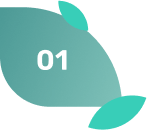
Харчування аюрведичне
Аюрведична дієта не передбачає жорстких обмежень у харчуванні. Ми врахуємо індивідуальні особливості, загальний стан здоров’я та надамо рекомендації щодо нормалізації вашої ваги
-
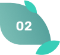 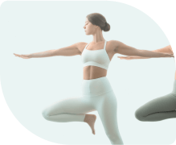
Вправи
Вправи з йоги допоможуть нормалізувати вагу, відчути легкість і повернути вашу фігуру
Проблеми зі сном Зустріч з практиком
На жаль, післяпологові проблеми зі сном - нерідкий випадок. Виконання нашого алгоритму допоможе повернути здоровий та глибокий сон.
-
 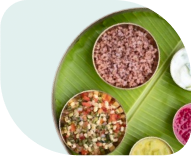
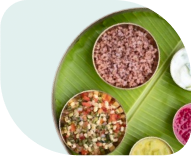
Аюрведичні рішення
Під час відновлення ви будете вживати цілющі спеції, масла та трави, які допоможуть відновити здоровий сон
-

Вправи
Вправи з йоги допоможуть розслабитись та відчуити спокій, що впливає на ваш здоровий сон
Проблеми з поставою Зустріч з практиком
Йога - хороше рішенням для відновлення та зміцнення опорно-рухового апарату після пологів. Вона допомагає покращити гнучкість та зміцнити м'язи. Наші практики розробили для Вас спеціальні асани, які допоможуть відновити поставу
-
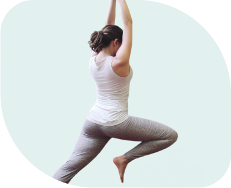
Покращення постави
Вправи з йоги сприяють зниженню болі в спині та шиї, допомагають покращити гнучкість, повертають вашу рухливість, оскільки суглоби та м’язи стабілізуються
-
 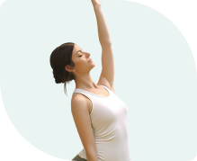
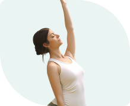
Спеціальні техніки - практика центрування
Ви будет виконувати асани, які сприятимуть відновленню та підтримці вашої постави і відновлять її баланс
Гінекологічні проблеми Зустріч з практиком
Післяпологові гінекологічні проблеми можуть викликати гормональний збій, підтікання сечі при навантаженнях, опущення матки. З урахуванням рекомендацій ваших лікарів та нашому алгоритму Ви нормалізуєте здоров’я!
-

Аюрведичні рішення
Аюрведична дієта сприяє відновленню горманального балансу, очищує від токсинів та омолоджує Вас та ваш організм
-
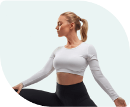
Вправи загальні
Йога сприяє відновленню і підтримці вашого здоров’я. Вправи зміцнять м’язи тазового дна і сприятимуть кращому кровообігу в малому тазі
-
Самомасаж
Практика самомасажу націлена на Ваше фізичне та емоційне оздоровалення
Інтимні проблеми Зустріч з практиком
Йога допомагає позбутись неприємних відчуттів, які у Вас виникають під час статевого контакту. Притримуючись наших рекомендацій ви зможете повернутись до повноцінного життя!
-
 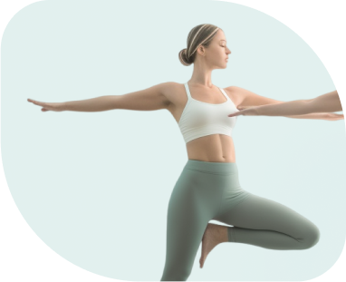
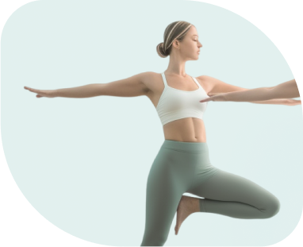
Загальні вправи
Ознайомитесь з технікою, яка допоможе підтримувати усі внутрішні органи в області тазу
-
 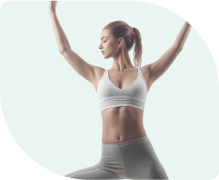
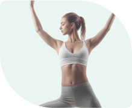
Інтимна гімнастика
Iнтимна гімнастика допомеже нормалізувати роботу інтимних м’язів і відновити пропріоріцепцію цієї зони
-
Самомасаж
Самомасаж допоможе повернути природні відчуття, пристрасть коли Ви зі своєю людиною займаєтесь коханням
Практик
За роки своєї практики наш інструктор допомогла сотням жінок відновити свою фізичну та емоційну рівновагу після пологів.
-
Тетяна Кривчикова
Таня - досвідчений інструктор йоги, яка спеціалізується на післяпологовому відновленні. Вона сама зіткнулася з викликами після пологів і знає, як важливо мати ефективні методики для відновлення.
Як зміниться Ваш стан після відновлення?
Практика післяпологового відновлення побудовано так, що ви зможете швидко відчути психологічні та фізіологічні покращення
-
Фізичне самопочуття
Після того, як Ви пройдете післяпологовий період ви відновите здоровий сон. Болі, які Ви відчували після родів не будуть більше турбувати, а тіло повернеться до звичного стану
-
Зовнішній вигляд
Після того, як ви нормалізуєте свою вагу ваше тіло буде ще більш привабливим, підтягнутим і струнким. Виконання певних асан можна зрівняти зі тренажерним залом, бо при їх виконанні ви задіюєте групи м’язів і все тіло
-
Емоційний стан
Ви зможете адаптуватись до материнства, відчути спокій та впевненість і найголовніше, що Ви відчуватимете любов до свого малюка
Програма
Прямий період після пологів – перша доба
-
- Загальні принципи відновлення у цей період
- Практичне заняття, що робити після пологів у пологовому будинку та вдома після природних пологів
- Практичне заняття першого дня після КС
- Відео підв'язування
- Самомасаж живота та грудей при ЕР (природні пологи) та КС (кесарів розтин)
Ранній період – перші 2-3 тижні
-
- Загальні принципи (розмовне відео на 10-15 хвилин)
- 4 практичні заняття по 10 хвилин
- Аюрведичні принципи харчування у післяпологовому періоді.
Середній період – 3-6 тижнів
-
- Опитувальник
- 10 практичних занять на корекцію постави, суглоби та включення м'язів стабілізаторів
- МФР (самомассаж на роле для тзб сустава, спины и ребер)
-

Пізній період - з 7 тижня - повернення жінки до легкого тренувального режиму
-
- 14 практичних тренувань з урахуванням корекції діастазу.
- Тест на діастаз (відео)
- Загальні принципи відновлення (розмовне відео)
Заняття з відновлення після пологів
-
- Вагітність триває дев'ять місяців, а післяпологовий період — усе життя.
- Післяпологовий період - дуже індивідуальний досвід, але в той же час у ньому є аспекти та відтінки, знайомі всім мамам. Це дорогоцінний час. Час, коли ви творите себе заново. Ви і художник, і полотно. Уявіть, що ваш малюк - це різнобарв'я фарб, і до кінця кожного дня ви двоє стаєте шедевром.
Почніть ваше відновлення сьогодні
Ми віримо, що материнство має вам приносити задоволення і не бути перепоною до щасливого життя
Не дозволяйте вашому фізичному та ментальному стану відбирати у вас найщасливіші дні материнства
Почати відновленняОплата
₴ 7 500 / 2 місяці
При повній оплаті Ви отримаєте знижку 10%
ФОП: Лебедєв Ярослав Володимирович
Номер телефону: +380995667544
З усіх питань email: support@nervous.academy
Політика конфіденційності Публічна офертаFAQ
Чи потрібен мені попередній досвід йоги, щоб приєднатися до вас?
Ні, наше післяпологове відновлення і проктики, які ми використовуємо побудовані так, щоб бути доступними для всіх, незалежно від рівня досвіду йоги. Ви отримаєте всі необхідні інструкції та підтримку від нашого досвідченого інструктора.
Ні, наше післяпологове відновлення і проктики, які ми використовуємо побудовані так, щоб бути доступними для всіх, незалежно від рівня досвіду йоги. Ви отримаєте всі необхідні інструкції та підтримку від нашого досвідченого інструктора.
Так, ви можете приєднатись якщо у вас були як природні пологи, так і кесареве сечіння. Ми рекомендуємо проконсультуватися зі своїм лікарем перед початком будь-якої фізичної активності після пологів.s
Так, наші практики підходить для жінок на будь-якому етапі післяпологового відновлення. Ви можете приєднатися в будь-який час, коли ви відчуваєте себе готовою до фізичних вправ.
Основні зміни відбуваються за час від 6 до 8 тижнів.
Наше післяпологове відновлення розроблено для жінок усіх вікових груп, які тільки що стали матерями. Важливо, щоб Ви отримали дозвіл від свого лікаря на початок фізичних вправ після пологів.
Тривалість одного заняття може варіюватися, але в середньому вони тривають близько 60-90 хвилин. Це дає достатньо часу для того, щоб встигнути пройти через всі вправи та релаксацію.
Політику конфіденційності можеш подивитися тут.
Публічну оферту можеш подивитися тут.